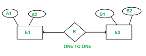

Entity Relationship (ER) Diagram is diagrammatic representation of data in databases, it shows how data is related.
Note: This article for those who already know what is ER diagram and how to draw ER diagram.
1) When there is One to Many cardinality in ER diagram.
For example, a student can be enrolled only in one course, but a course can be enrolled by many students

For Student(SID, Name), SID is the primary key. For Course ( CID, C_name ), CID is the primary key
Student Course
(SID Name) ( CID C_name )
-------------- -----------------
1 A c1 Z
2 B c2 Y
3 C c3 X
4 D
Enroll
(SID CID)
----------
1 C1
2 C1
3 c3
4 C2
Now the question is, what should be the primary key for Enroll SID or CID or combined. We can’t have CID as primary key as you can see in enroll for the same CID we have multiples SID. (SID , CID) can distinguish table uniquely, but it is not minimum. So SID is the primary key for the relation enroll.
For above ER diagram, we considered three tables in database
Student Enroll Course
But we can combine Student and Enroll table renamed as Student_enroll.
Student_Enroll
( SID Name CID )
---------------------
1 A c1
2 B c1
3 C c3
4 D c2
Student and enroll tables are merged now .
So require minimum two DBMS tables for Student_enroll and Course.
Note: In One to Many relationship we can have minimum two tables.
2. When there is Many to Many cardinality in ER Diagram.
Let us consider above example with the change that now student can also enroll more than 1 course.
{kind=link}
Student Course
( SID Name) ( CID C_name )
-------------- -----------------
1 A c1 Z
2 B c2 Y
3 C c3 X
4 D
Enroll
( SID CID )
----------
1 C1
1 C2
2 C1
2 C2
3 c3
4 C2
Now, same question what is the primary key of Enroll relation, if we carefully analyse the Enroll primary key for Enroll
table is ( SID , CID ).
But in this case we can’t merge Enroll table with any one of Student and Course. If we try to merge Enroll with any one of the Student and Course it will create redundant data.
Note: Minimum three tables are required in Many to Many relationship.
3. One to One Relationship
There are two possibilities
A) If we have One to One relationship and we have total participation at at-least one end.
For example, consider the below ER diagram.
{kind=link}
A1 and B1 are primary keys of E1 and E2 respectively.
In the above Diagram we have total participation at E1 end.
Only the primary key of E1, which is in total participation should be allowed as the primary key of the reduced table, since if the primary key of E2 is used, it might have null values for many of its entries, since its participation is only partial and may not have corresponding entries for all its values.
Note – Only one table required.
B) One to One relationship with no total participation.

A1 and B1 are primary keys of E1 and E2 respectively.
{kind=link}
Primary key of R can be A1 or B1, but we can’t still combine all the three table into one. if we do, so some entries in combined table may have NULL entries. So idea of merging all three table into one is not good.
But we can merge R into E1 or E2. So minimum 2 tables are required.
Below are the Gate Previous Year question.
http://quiz.geeksforgeeks.org/gate-gate-cs-2008-question-82/
http://quiz.geeksforgeeks.org/gate-gate-cs-2008-question-83/